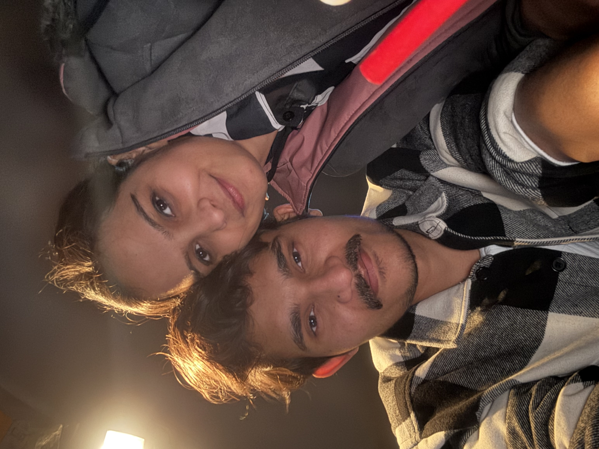
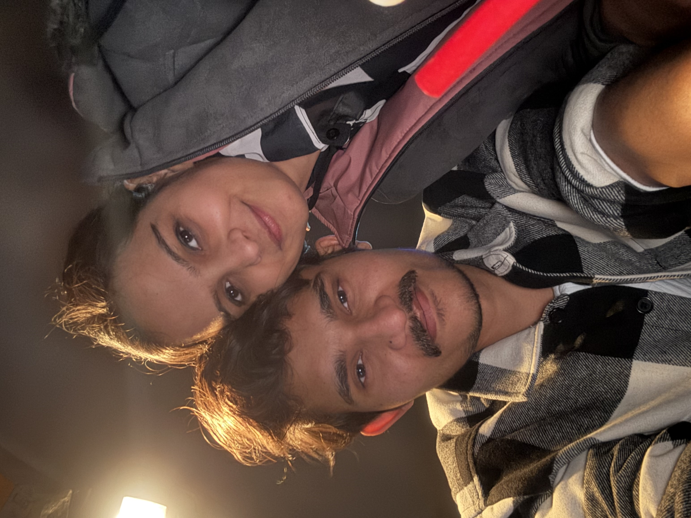

Our Story
Hey div I love you baby
Now I want to share my feels and our memories to you I am just trying to write in English let see how is my English please ignore my grammatical errorsYeah now I starting…
Yeah baby I was sent a follow request to you in 2022
I sent it intentionally baby like I was seen my life with one beautiful and mature girl and I think you are perfect for me to be mine. That’s why I approached you to be my wife. I just gave my efforts to fell in my love, I just trying to show my feelings to you after a while it worked and you was mine by heart.
You called me I was there in just 10 min You know all the things very well. now, let me share my situation and mood about that night
on that night when you msg me on text application I was felt over the moon I was very happy because in that finally that time was came to meet you. When I see you i was very happy
You know baby I did a lot aforts to just meet you but as per girl you was right I can understand why you did not meet me when you are my friend.
But Ambe maa helped me and Maa ambe understand my feeling and ambe maa planed one great thing for us to meet it was accidently for you but I am damn sure for that it was preplanned for me by god.
Because god think that why divya does not meet to Abhi Abhi is good boy.
And situation happened and you know each and everything about that Navaratri night
You called me I was there in just 10 min You know all the things very well. now, let me share my situation and mood about that night on that night when you msg me on text I was felt over the moon first time you share your number with me. baby, now i want to say something in gujarati pliz if you are confortable jaan, e ratre hu mara ghar na tarrace per ciggrate pito hato ane tane bau yaad karto hato tyare ek song sambhadto hato je hu kau sorry ena badha lyrics wrong way ma na laish some of them which i relate (Be Rahem, Be Wafa, Apna Kuch Ata Pata bata To De, O Be Rahem Bekali ohh ho ho, Be Kasi uu hu hu, Kuch To Kam Ho, Phir Se muskura To De,. O O Be rahem)
Bas aa song sambhadi ne tane snap bhi moklyo ane hu niche gayo mara room ma. bas tya ungvani taiyari karto hato ane taro msg aayo aby k ek help joiye che. after that you know all things. but jyare hu nikdyo papa laptop nu kam karta hata mane k atyare kya jay che aatli night ma. me kahyu papa chintan madva aayo che to ringroad jai ne aavu. ane tghandi jevu che etle gadi lai jau chu. me chavi to lidhi baby pan baar gayo tya kbr padi mara ghar agad elecric pipe nu kam chaltu hatu have aapdi car ek dum same medan ma padi hati ane papa k mare kyay javanu nai 2 day sudhi to khodi nakho have next to immposible hatu car nikadvu ane taro msg k amne wait na karawish. to baby me tarat j int na pathhar aave ne e khada ma nakhvana chalu karya 10 min lagi pan fata fat nakhya sorry e vastu tane nati kahi pan kahu e rate ek int chatki ne to mane page last finger per vagyu tu ane me chappa pehra hata etle e day hu trackpant ma shoes peri ne aavyo to baby.
Pachi mand mand badhu set kari ne car nikadi ane vijay park ubho rahyo cause hu bau nervous hato pachi baby me vicharyu k cigg pi lau pan mane dar lagyo k div ne smell aai jase to mara jode vaat nai kare etle baby 15 sec ma decision lai lidhu ane bhayo hu Galaxy aava mate. baby me kyay time khoto nato karyo. sereously, mar baby e day 120 to 140 kmph per hu galaxy aai gyo hato k maar baby ne wait na karwo pade. Hu tya aai gyo ane pachi aapde msg maa vaat kari k tu on the way che. may be 20 to 30 min hu tya hato tyare every min hu alag alag style ma ubho rehto hato k kai rite div ne game. pan tane kbr che ne end ma to naturally j badhu thai jay hu ubho hato ane tu aavi mane hug karwanu try karyu tayre mara heartbeat bau vadhi gaya hata baby. hu radi jat div jo te e day mane hug karyu hot to baby. pachi tu car ma besi mare jane jovi hati abu shanti thi pan nahto kari shakto
cause tane kharab ane unsecure feel that baby mari e day sache ma koi khoti expectation hati bhi nai. incase te mane hug karyu hot to bhi hu tane mara banne hath thi touch bhi na karto. Baby tame mara mate wife cho not a girlfriend and all.
I was very happy because in that finally that time was came to meet you.
When I see you i was very happy I just want to see you by clock stop. But I am not that type of person to look like leacheyes on girl. I want to spent more time with you on that time but I know the situation Continuously your sister and dad was calling you. And you know that kind of situation people cant talk more same scenario happened with me.
I think already like when I will meet to divya I will ask this question, I will share my this story and all but I was just blank at that time. After second day you sent me your image which will I posted in below our memories section as DIV_BABY tag..
At that time I was confirmed I think divya also like me.
After that I approached you and you accepted my proposal.
So sorry I did not do anything for you at that time like perfect propose giving rose, ring, teddy bear and chocolates and all.
But heartly baby I love you so much
I know baby you did a lot for me you gone through very lean patch situation for me from your family I am fucking damn sure no one girl will do it just for boy like me. I am hearty and gently thanksfull to you for that.
We was in relationship for around 15 days or something after that time some bad things happened with you and we broke up just for formalities but after that
date is February 16 and I am strongly missing you
.jpeg)
 
